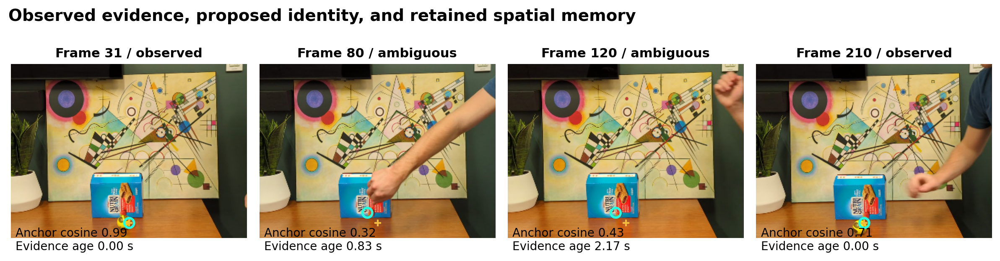
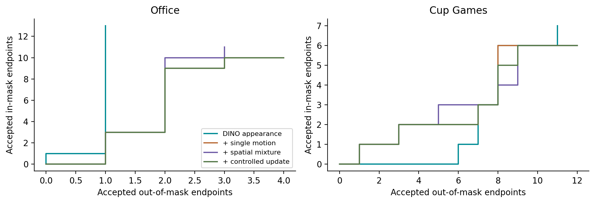
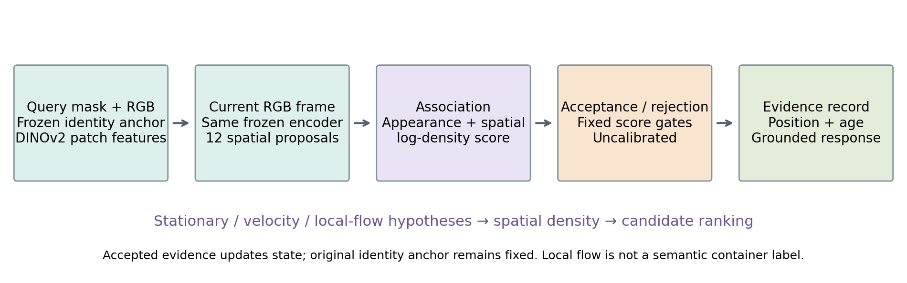
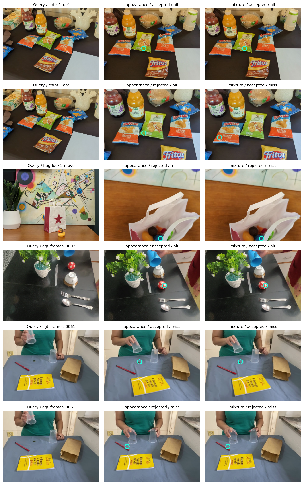

Remember the object.
Verify its return.
When appearance improves,
does spatial memory help?
An executed comparison with frozen DINOv2 features, shared candidates and four causal selectors. The memory mechanism now changes decisions. The results also expose where it makes them worse.
36 clips · 56 sparse endpoints · 7,530 processed frames · 47 verified references

Development results: the learned appearance control improves candidate availability on Office. The tested spatial mixture increases accepted errors without increasing accepted hits. No state-of-the-art or calibrated hidden-location claim is established.
Watch what memory changes.
All panels use the same raw video and initial-mask DINOv2 anchor. Cyan is a current candidate; amber marks the last accepted location. An accepted candidate can be wrong. These four variants are our implemented controls—not renamed published tracking systems.
Predictions are recorded causal inference. Scrubbing replays them; it does not run a new model in the browser. Sparse target masks cannot establish intermediate identity accuracy.
Archived CoTracker demonstrations and their different temporal access ↗Count correct answers.
Count incorrect answers too.
| Collection | Variant | Candidate hits | Accepted hits | Accepted misses | Abstentions |
|---|---|---|---|---|---|
| office | appearance | 22 | 11 | 1 | 19 |
| office | motion | 18 | 10 | 3 | 18 |
| office | mixture | 19 | 11 | 3 | 17 |
| office | mixture_adapt | 18 | 10 | 4 | 17 |
| cup_games | appearance | 8 | 6 | 11 | 8 |
| cup_games | motion | 7 | 6 | 12 | 7 |
| cup_games | mixture | 7 | 6 | 12 | 7 |
| cup_games | mixture_adapt | 7 | 6 | 12 | 7 |

Office and Cup Games are two TCOW collections. They are not untouched held-out benchmarks. The curves are descriptive development sweeps, not calibrated risk guarantees.
Spatial belief enters association.

The mixture changes 1,934 frame selections. Its stationary, velocity and flow alternatives have explicit likelihood weights. They do not recognize semantic containment, and their uncertainty is uncalibrated. The next research hypothesis is to distinguish objects moving inside containers from objects merely hidden behind them.
Success, error, and abstention.

For each collection, the lexicographically first mixture accepted hit, accepted miss and abstention are shown. Selection is disclosed; every endpoint appears in the downloaded records.
The manufacturer's Ameca rig.
Created in your Tritium account: Occlusion Memory — Evidence Replay, using the official Ameca Gen 1 template, with native 20-second blinking and breathing tracks saved.
Responsive speech is not connected yet. Tritium reports ad-0005 disconnected and “No voices available.” No robot-side script has run. The supplied Python response generator preserves the distinction between remembered properties and unverified hidden state.